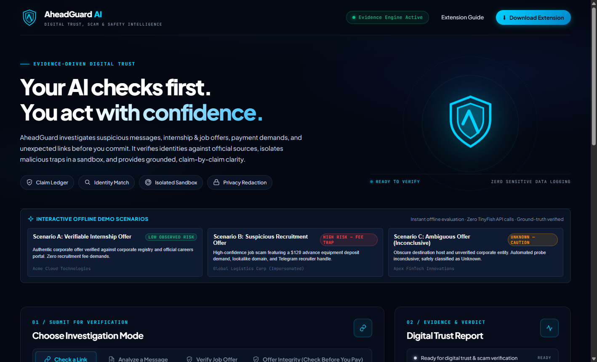
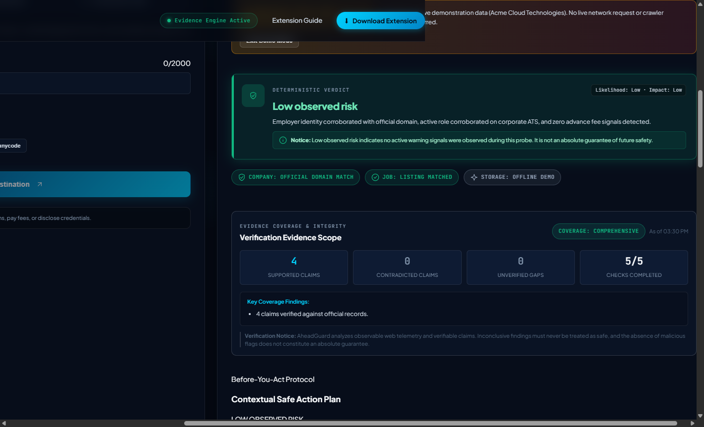
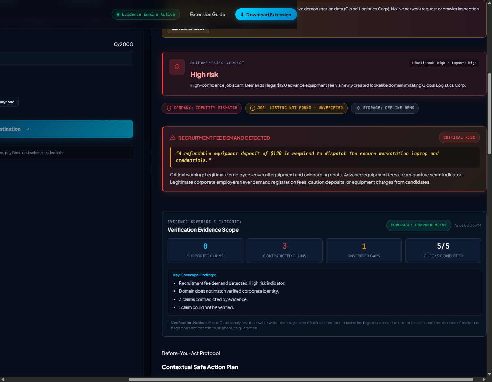
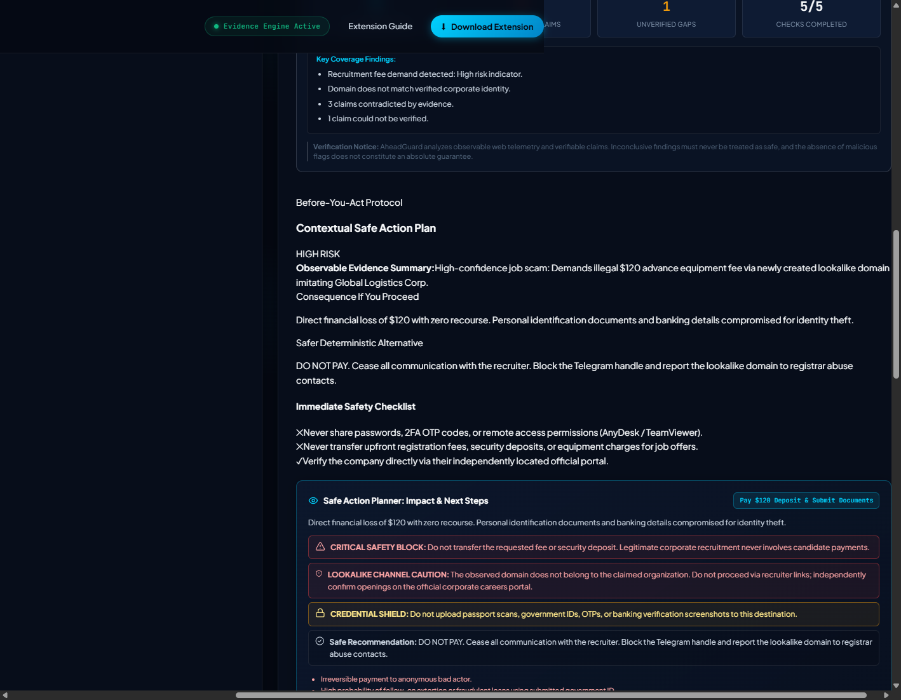
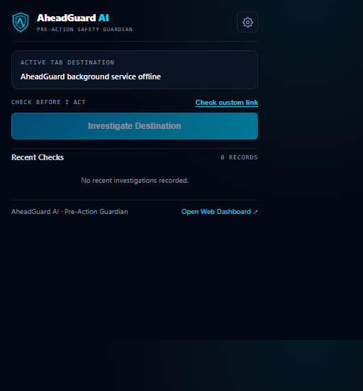
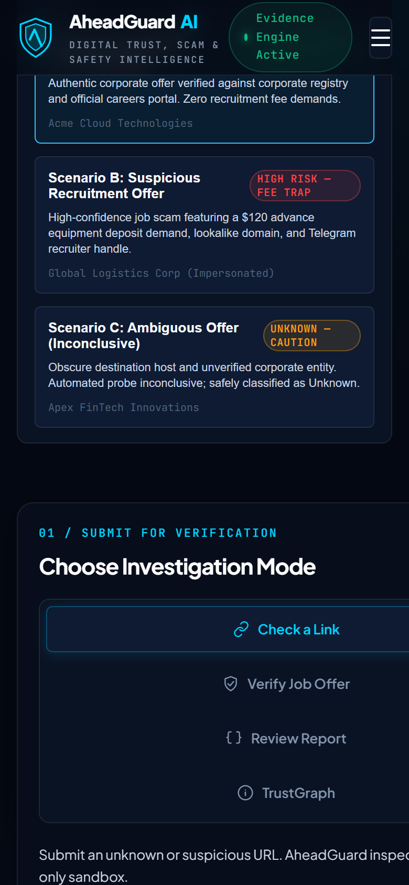

AHEADGUARD AI
“Check before you trust.”
A pre-action digital safety platform that investigates suspicious links, recruitment offers, recruiter identities, job vacancies, and payment requests before users take potentially irreversible actions.

THE PROBLEM & RECRUITMENT FRAUD TAXONOMY
Digital recruitment fraud has evolved from crude spam into sophisticated, highly coordinated deception pipelines. Attackers deploy lookalike domains spoofing corporate career portals, impersonate real engineering recruiters using stolen LinkedIn identities, and route communications through Telegram channels or WhatsApp business handles.
Job seekers — particularly students and early-career engineers — are pressured into paying upfront "document processing fees", "laptop insurance deposits", or "training registration costs" before discovering that the job requisition never existed.
Standard antivirus scanners and URL reputation databases fail against this attack surface because:
- The URL itself is often clean: Attackers often host forms on legitimate Google Forms, Typeform, or fresh unclassified domains with valid SSL certificates.
- The fraud resides in the semantic claim: The danger is not malicious JavaScript; it is the claim that an applicant must wire ₹4,500 via UPI for a "confirmed internship offer letter".
- Identity fragmentation: A genuine company name is combined with a mismatched recruiter email domain (e.g.
recruiter@company-careers-portal.comvscompany.com).
Checking a link in isolation is fundamentally insufficient: an investigation must evaluate the job offer, recruiter identity, applicant tracking system (ATS) tenant alignment, and payment requests holistically.
THE SOLUTION: PRE-ACTION DIGITAL TRUST
AheadGuard AI introduces a pre-action verification paradigm. Instead of alerting a user after malware has executed or credentials have leaked, AheadGuard investigates digital offers before the user clicks deceptive links, transfers funds, or discloses personal identity documents.
Evidence-First Investigation
Every finding is backed by directly observed facts: HTTP status codes, TLS certificate issuers, domain age, ATS tenant boundaries, and explicit extracted text. Model interpretations are strictly partitioned from ground truth.
Deterministic Safety Rules
Safety evaluations do not depend on probabilistic LLM mood or arbitrary temperature. Hard policy boundaries classify upfront fees, private network targets, and domain mismatches with absolute algorithmic consistency.
END-TO-END INVESTIGATION ARCHITECTURE
The platform executes a disciplined 7-stage pipeline when evaluating untrusted recruitment offers and digital links:
URL, offer letter text, recruiter email, or payment prompt
SSRF defense, RFC 1918 blocking, loopback isolation
12-category structured claim decomposition via Zod
Read-only remote browser inspection over SSE
Partitioning observed facts from model inferences
Deterministic 4-tier policy & Action Preview

RISK INTELLIGENCE & FOUR-TIER EVALUATION
Unlike tools that provide opaque, arbitrary "threat scores" (e.g. 73/100), AheadGuard AI evaluates claims against four deterministic categories with transparent evidentiary rationale:
Triggered when explicit fraudulent patterns are detected: upfront fee requests, private/internal IP address targets (SSRF attempt), confirmed lookalike domain impersonation, or direct contradictions with corporate recruitment policies.
Triggered by behavioral discrepancies: recruiter claiming enterprise status while using free generic email providers (Gmail, Outlook), newly registered domains (<30 days old), or unverified third-party interview links.
Preserves technical humility. Assigned when target websites sit behind impenetrable bot-mitigation firewalls, private authentication walls, or when submitted data lacks corroborating public records.
Assigned when all observed facts align with verified authoritative sources: official corporate career domain, matching ATS requisition ID, valid corporate MX records, and absence of payment solicitations.

EVIDENCE LEDGER & TRUSTGRAPH ENTITY CORRELATION
Two foundational systems govern how AheadGuard prevents hallucinations and surfaces organized intelligence:
The Evidence Ledger
Every report includes an immutable ledger that cleanly separates Directly Observed Facts (e.g. Domain registered 14 days ago via Namecheap) from Model Interpretations (e.g. Short domain age correlates with temporary disposable recruitment campaigns). Users can audit the exact provenance of every claim.
TrustGraph Entity Mapping
TrustGraph maps cross-channel relationships between phone numbers, email addresses, root domains, UPI payment identifiers, and corporate brand marks. It identifies when disjointed recruitment solicitations on WhatsApp share identical payment addresses.

SECURITY ENGINEERING & ADVERSARIAL DEFENSE
Building a platform that takes arbitrary URLs and text from untrusted users requires defensive engineering at every network boundary:
Preflight SSRF Prevention
Resolves DNS before initiating requests. Rejects all RFC 1918 private IPv4 blocks (10.0.0.0/8, 172.16.0.0/12, 192.168.0.0/16), 127.0.0.0/8 loopbacks, IPv6 site-local addresses, and cloud instance metadata services (169.254.169.254).
Untrusted DOM Isolation
HTML content extracted via TinyFish browser automation is treated as untrusted data. Strips executable script blocks, sanitizes HTML entities, and enforces character payload bounds before passing text to extraction engines.
Prompt Injection Isolation
User-submitted offer strings and scraped website text are quarantined in delimited evaluation wrappers with negative guidance instructing the model to analyze claims strictly without interpreting injected commands.
Safe Error Redaction
Production API exceptions redact internal connection strings, third-party authentication tokens, and infrastructure topologies, providing clean, user-safe error diagnostics.
INTEGRATION STATUS MATRIX (TECHNICAL HONESTY)
In alignment with Gokul Labs' strict technical honesty standards, the following matrix distinguishes production-deployed features from configured extensions:
| COMPONENT | STATUS | DESCRIPTION & BOUNDARIES |
|---|---|---|
| Web Cockpit | DEPLOYED | Production application live on Vercel with responsive desktop and mobile viewports. |
| Neon PostgreSQL | CONNECTED | Serverless relational database storing persistent audit trails, trust reports, and entity nodes. |
| TinyFish Research | CONNECTED | Read-only automated browser exploration streaming DOM observations over Server-Sent Events. |
| Telegram Webhook | CONNECTED | Direct bot webhook receiving forwarded job offers and returning instant risk summaries. |
| Chrome Extension MV3 | TESTED LOCALLY | Manifest V3 extension tested in Developer Mode with active-tab inspection; not published to Web Store. |
| Discord Webhook | IMPLEMENTED | Webhook handler for posting threat alerts and community verification requests. |
| Social Webhooks | CONFIGURED | Architecture & payloads configured; live messaging gated on Meta business verification. |

VERIFIED TECHNOLOGY STACK
Next.js 15 App Router & React 19
React Server Components for rapid initial layout delivery, unified Edge API routes for Server-Sent Events, and client state machines for live investigation telemetry.
Neon Serverless PostgreSQL
Connection pooling, auto-scaling to zero compute when idle, and structured relational persistence for audit ledgers, TrustGraph entities, and investigation reports.
Server-Sent Events (SSE)
Unidirectional HTTP streaming pushing phase transitions, active claim validations, and partial DOM insights to the user interface in real time.
TypeScript, Zod & Vitest
End-to-end type safety, runtime schema enforcement for 12 claim categories, and automated regression testing across deterministic risk rule boundaries.
KEY ENGINEERING DECISIONS & CHALLENGES
Why Deterministic Risk Policy over Pure LLM Scoring?
LLMs are probabilistic and prone to hallucinated benevolence. A prompt that returns "Suspicious" today might return "Safe" tomorrow on identical input. AheadGuard uses pure deterministic functions for scoring: upfront fees or private IP targets trigger HIGH RISK unconditionally.
Why Read-Only TinyFish Browser Automation?
Scam landing pages frequently employ JavaScript cloaking, bot-fingerprinting defenses, and multi-hop redirects that simple fetch() requests cannot navigate. TinyFish executes real browser rendering in a sandboxed remote container without executing risky client-side actions.
Resolving the Lookalike Domain Problem
Attackers register domains like amazon-recruiting-jobs.com to deceive candidates. AheadGuard decomposes URLs using public suffix lists, cross-references corporate WHOIS registration ages, and verifies whether the applicant tracking system is genuine.
Streaming Telemetry via Server-Sent Events
Deep investigations involving remote browser navigation require 6 to 12 seconds. By streaming progressive status updates over SSE, users observe each claim being verified in real time, dramatically improving perceived responsiveness and trust.
RESULTS & CURRENT TECHNICAL LIMITATIONS
Deployed live to production on Vercel with Neon PostgreSQL. Successfully processes complex multi-tier recruitment scams, exposes upfront payment traps, and streams investigation progress over SSE.
Cannot access closed private encrypted chats without user submission. The Chrome Extension requires manual loading in Developer Mode until published on the Web Store. Novel offline-only fraud without digital footprint falls back to UNKNOWN.
In safety engineering, technical honesty builds far greater trust than claiming 100% prevention. Explicitly communicating uncertainty is an engineering feature, not a deficiency.
